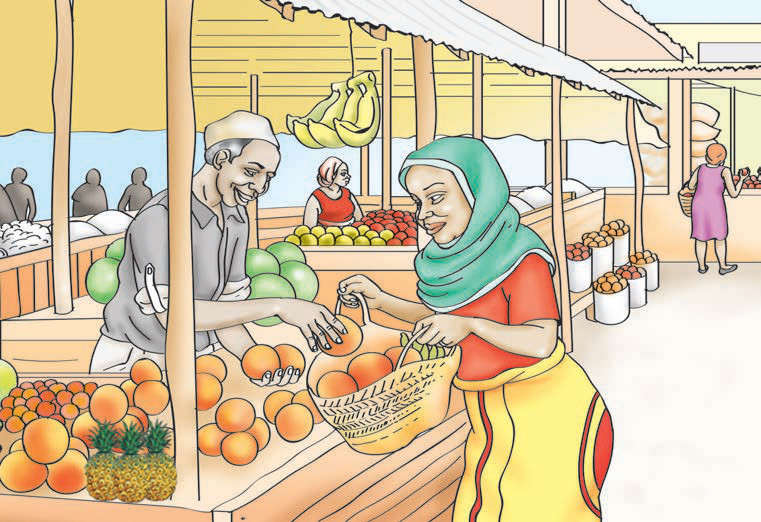

(vi)
Does the calf have a mother?
Yes, the calf ___ a mother.
(vii)
Does the giraffe’s calf have a short tail?
Yes, the giraffe’s calf ___ a short tail.
(d)
Listen to the dialogue from the audio recording played by the teacher. Then, act it out in pairs.
(e)
Read the dialogue between Mrs Mrisho and Juma in pairs.
At the fruit point
Juma sells fruits at the fruit point. He sells watermelons, papayas, mangoes, bananas, oranges, lemons and apples. Mrs Mrisho wanted to buy some fruits.

23